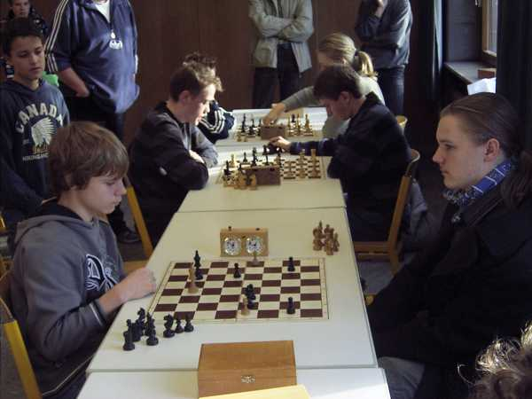
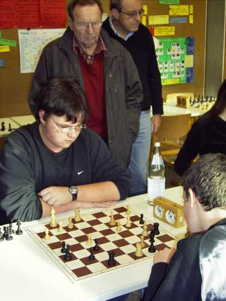
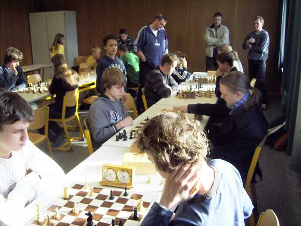
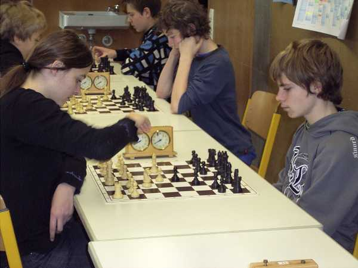
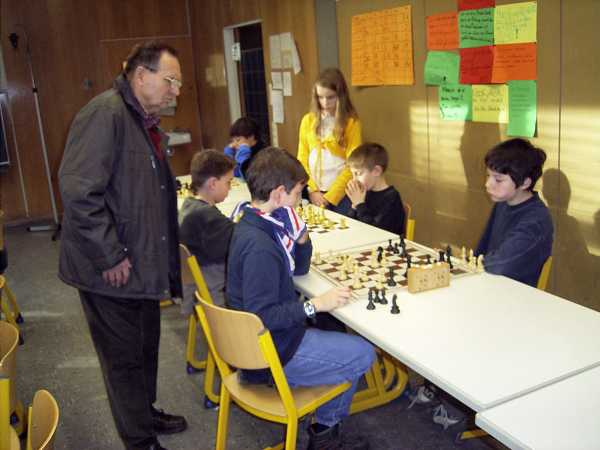

Nicolas hat schon in der 1. Runde eine harte Nuss zu knacken...

Jochen mit spirituellem Beistand durch Hermann Knütel.

Turnieratmosphäre in der Spielgruppe U16 / U14

Daniel traut seinen Augen nicht: Schon wieder in unter 3 Minuten gewonnen...

Hier ist Daniel schon etwas konzentrierter.

So langsam ist er gut drauf:
Nur noch wenige Punkte fehlen zum Turniersieg!

Tobias und Jojo im Quasi-Lokalderby.

Auch Jochen kämpft gegen Thomas Jakobsche vergebens.

Frauenpower gegen Nicolas.

Schwierige Eröffnung?

Jojo in höchster Konzentration.

Schon etwas gelassener:
Der "Klassiker" Gregor Haag - Jochen Bahner.

Daniel holt mit vollem Mund und Konzentration den letzten
entscheidenden Punkt zum Turniersieg in der U12.